Создадим куб.
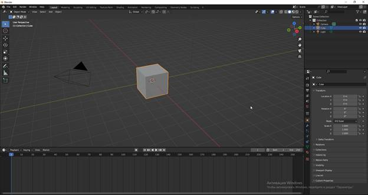
Нажимаем на клавиатуре на клавишу «I» и создаем ключ location на 1 кадре.
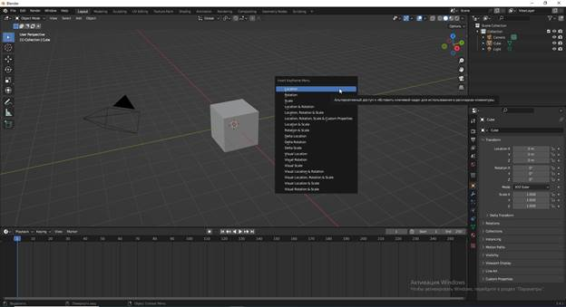
Перейдем на 50 кадр, сдвинем наш куб по оси У и аналогично поставим ключ.
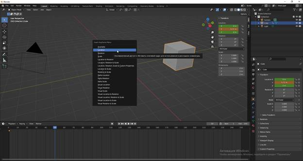
У нас получилась простая анимация перемещения куба.
Изменим длительность анимации на 50 кадров.
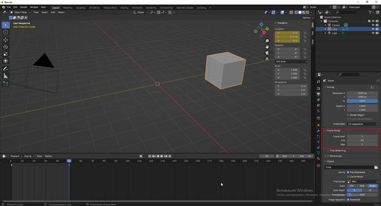
Если вы приглядеться, то вы увидете что объект сначала двигается чуть медленнее, в центре он ускоряется, потом опять там медленнее пойдет.
Перейдем во вкладку Анимация.
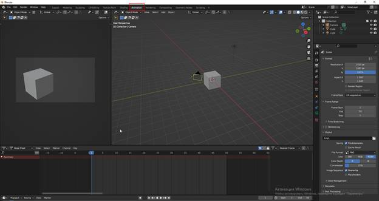
Затем перейдем в окно Dope Sheet.
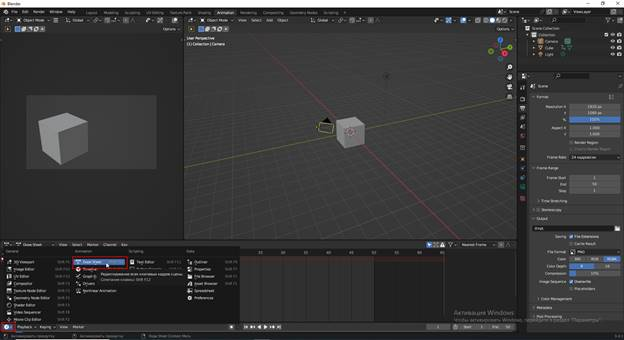
Посмотрим, чем оно отличается от Тimeline.
Здесь для нашего куба установлена полная позиция, то есть по ос и Х по У и по Z это локейшен в трехмерном пространстве позиционирования объекта. На каждую ось идет отдельный ключ.
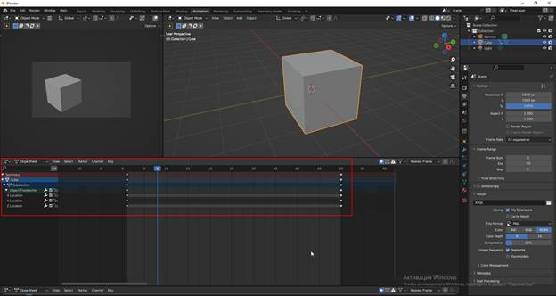
Добавим интерполяцию ключей.
Это можно делать находясь в как в Timeline, так и в Dope Sheet.
Для этого в окне необходимо нажать английскую букву «T».
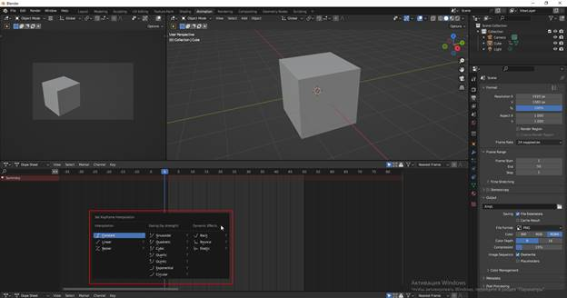
Это интерполиация ключей.
Рассмотрим интерполяцию Безье, для этого выделяем все ключи и нажимаем Т.
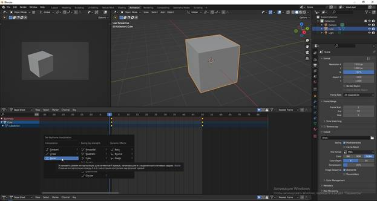
Затем для лучшей наглядности переключимся в окно Graf Editor (Редактор графов).
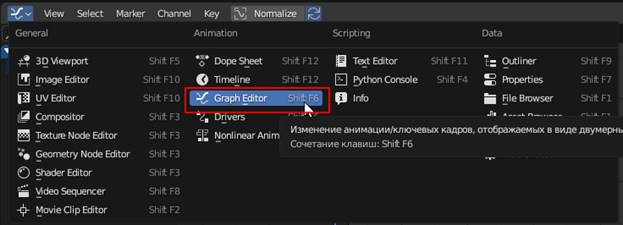
Редактор графов похож на таймлайн, но в нём отображена более детальная информация о ключевых кадрах и том, как они интерполированы — то есть как кривая отображается на графике.
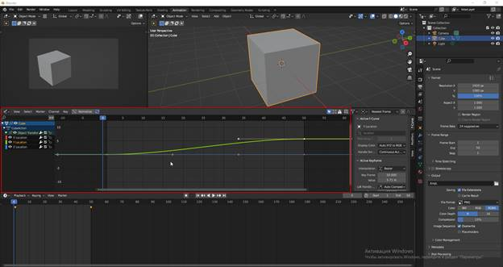
Когда используется кривая Безье — это означает, что объект медленно начинает движение, разгоняется и постепенно замедляется к концу анимации. Для наглядности переведём Центр трансформации (Pivot Point) в режим Индивидуальные центры (Individual Centres) и сделаем кейфреймы чуть шире при помощи клавиши S. Это отразится на графике, и распределение скорости движения объекта между кейфреймами изменится. С этими настройками также можно экспериментировать.
Рассмотрим другие режимы интерполяции. Выделяем ключи, вызываем полный список клавишей T и выбираем Linear.
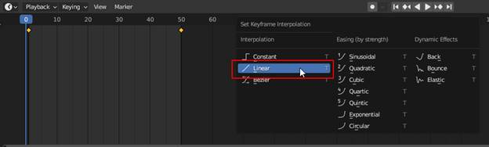
Линейно (Linear) — объект движется равномерно, без замедлений и ускорений. Этот режим может оказаться удобным для таких задач, как, например, анимация вращения Земли вокруг своей оси.
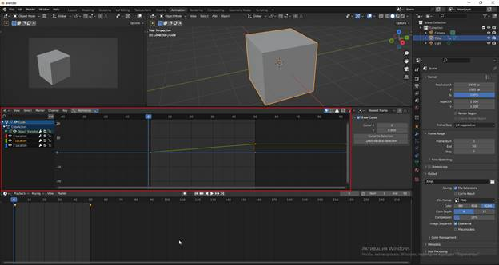
Аналогично изменим интерполяцию на Constant.
Постоянно (Constant) — это когда промежуточное значение между кадрами отсутствует. Пододит для стоп-моушн-анимации.
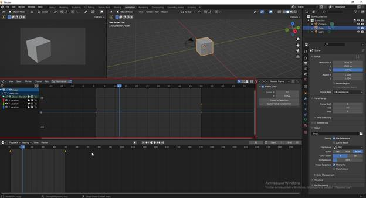
В одном проекте создайте перемещение 3 кубов с разными интерполяциями. Сравните полученные результаты.